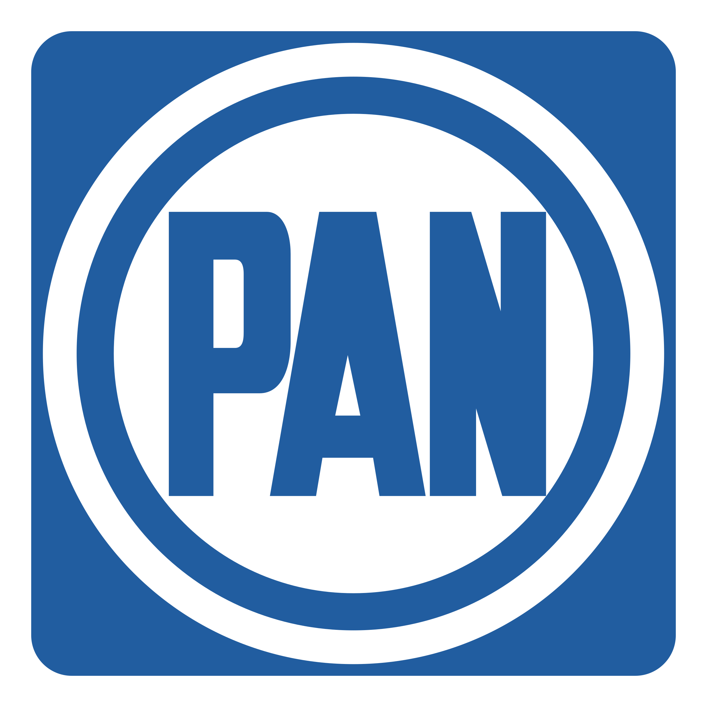

Bienvenido al sitio de preguntas del PAN

El Partido Acción Nacional (PAN) es una organización política mexicana que promueve los valores del humanismo político.
Fundado en 1939, el PAN cree en la dignidad de la persona humana, la libertad, la solidaridad, la justicia social y el bien común.
Esta plataforma tiene como objetivo evaluar y reforzar el conocimiento sobre los principios, estatutos y ética del partido entre sus militantes.
Te invitamos a participar en este cuestionario diseñado para fortalecer tu formación política y tu compromiso con los ideales del PAN.
Pero antes de eso, ¡échale un vistazo a nuestra Guía de Estudio 2025!
Ver guía de estudio
Ir al cuestionario